Country guide · drawn from 181 verified pins
Vietnam
Known for: Saigon Notre-Dame BasilicaHoan Kiem LakeBanh Mi Phuong
5 guides · 183 places · 111 sights · 72 to eat & drink · status last checked 2026-10-03.
Ho Chi Minh City, district by district and out to the Mekong, Củ Chi, Tây Ninh and Vũng Tàu corridors.
-

Ho Chi Minh City
171 places phởbánh mìCầu Ba SonRead as a guidebook — Ho Chi Minh CitySee it in numbers — Ho Chi Minh City
-

Hanoi
4 places phởbúnHa Long Bay -

Hoi An
2 places bánh mìHoi An Ancient TownBanh Mi Phuong -

Hanoi
4 places phởbúnHa Long Bay